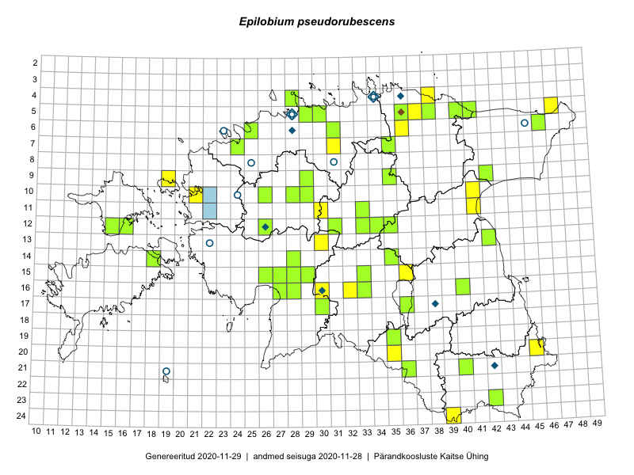

Epilobium pseudorubescens — hele pajulill
Kaardile koondatud taksonid: Epilobium pseudorubescens A.K. Skvortsov (39); Epilobium ciliatum Raf. (31); Epilobium rubescens Rydb. (1)

Kaart põhineb 71 kirjel, neist:
vaatlusi 23
eksemplare 48
Kaasaegsed1 leiukohad asuvad 57 ruudus.
Andmed “Eesti taimede levikuatlasest”,2 sulgudes ruutude arv:3
● 1971–2005 (3)
○ 1921–1970 (4)
△ kuni 1920 (0)
+ hävinud (0)
? kaheldav (0)
Lisaruudud teistest andmebaasidest:4
ELF: 2006– . . . (0)
PKÜ: 2006– . . . (0)
ELF: 1971–2005 (1)
PKÜ: 1997–2005 (0)
| Ruut | Vaatleja(d) | Vaatlusaeg | Kirje PlutoFis |
|---|---|---|---|
| 12-33 | Tõnu Ploompuu, Marko Veinbergs, Eerik Leibak | 2016-07-22 | ruut/ala: Epilobium ciliatum Raf. |
| 11-33 | Tõnu Ploompuu, Marko Veinbergs, Eerik Leibak | 2016-07-22 | ruut/ala: Epilobium ciliatum Raf. |
| 04-38 | Thea Kull, Susanna Vain, Eerik Leibak | 2016-07-26 | ruut/ala: Epilobium ciliatum Raf. |
| 05-36 | Tõnu Ploompuu, Eerik Leibak | 2016-07-27 | ruut/ala: Epilobium ciliatum Raf. |
| 05-37 | Tõnu Ploompuu, Eerik Leibak | 2016-07-27 | ruut/ala: Epilobium ciliatum Raf. |
| 09-42 | Ott Luuk, Eerik Leibak | 2016-08-05 | ruut/ala: Epilobium ciliatum Raf. |
| 13-30 | Tõnu Ploompuu, Hannes Pehlak, Marko Veinbergs | 2016-07-21 | ruut/ala: Epilobium ciliatum Raf. |
| 12-33 | Tõnu Ploompuu, Marko Veinbergs, Eerik Leibak | 2016-07-22 | punkt: Epilobium ciliatum Raf. |
| 11-33 | Tõnu Ploompuu, Marko Veinbergs, Eerik Leibak | 2016-07-22 | punkt: Epilobium ciliatum Raf. |
| 11-33 | Tõnu Ploompuu, Marko Veinbergs, Eerik Leibak | 2016-07-22 | punkt: Epilobium ciliatum Raf. |
| 05-37 | Tõnu Ploompuu, Eerik Leibak | 2016-07-27 | punkt: Epilobium ciliatum Raf. |
| 09-19 | Toomas Kukk, Peedu Saar | 2019-09-17 | ruut/ala: Epilobium pseudorubescens A.K. Skvortsov |
| 06-46 | Toomas Kukk, Thea Kull | 2019-09-11 | punkt: Epilobium pseudorubescens A.K. Skvortsov |
| 05-47 | Peedu Saar, Timo Luhamäe | 2019-09-12 | ruut/ala: Epilobium pseudorubescens A.K. Skvortsov |
| 16-32 | Thea Kull, Mari Reitalu | 2019-09-11 | punkt: Epilobium ciliatum Raf. |
| 10-21 | Ott Luuk | 2019-09-19 | punkt: Epilobium pseudorubescens A.K. Skvortsov |
| 16-30 | Peedu Saar, Martin Tikk, Toomas Kukk | 2019-08-28 | ruut/ala: Epilobium pseudorubescens A.K. Skvortsov |
| 06-36 | Peedu Saar, Timo Luhamäe | 2019-08-07 | ruut/ala: Epilobium pseudorubescens A.K. Skvortsov |
| 07-31 | Peedu Saar, Timo Luhamäe | 2019-08-05 | ruut/ala: Epilobium pseudorubescens A.K. Skvortsov |
| 24-39 | Peedu Saar, Timo Luhamäe | 2019-07-12 | ruut/ala: Epilobium pseudorubescens A.K. Skvortsov |
| 20-35 | Peedu Saar, Timo Luhamäe | 2019-07-09 | ruut/ala: Epilobium pseudorubescens A.K. Skvortsov |
| 11-30 | Ott Luuk, Toivo Sepp | 2019-07-23 | punkt: Epilobium pseudorubescens A.K. Skvortsov |
| 20-45 | Ott Luuk, Tiit Hallikma | 2019-07-10 | punkt: Epilobium pseudorubescens A.K. Skvortsov |
| 10-29 | Toomas Kukk | 2006-08-14 | TAA0087868: Epilobium pseudorubescens A.K. Skvortsov |
| 10-29 | Toomas Kukk | 2006-08-14 | TAA0087869: Epilobium pseudorubescens A.K. Skvortsov |
| 23-42 | Peedu Saar, Ott Luuk | 2015-08-15 | TAA0135381: Epilobium pseudorubescens A.K. Skvortsov |
| 13-42 | Thea Kull, Meeli Mesipuu | 2015-08-14 | TAA0116887: Epilobium pseudorubescens A.K. Skvortsov |
| 09-35 | Jana-Maria Habicht | 2015-07-30 | TAM0119827: Epilobium rubescens Rydb. |
| 05-40 | Kaili Orav, Silvia Pihu | 2015-07-21 | TAA0134855: Epilobium pseudorubescens A.K. Skvortsov |
| 14-35 | Liina Oja, Elle Rajandu, Susanna Vain | 2016-07-22 | TAA0136373: Epilobium pseudorubescens A.K. Skvortsov |
| 06-31 | Toomas Kukk, Peedu Saar | 2016-09-08 | TAA0136242: Epilobium pseudorubescens A.K. Skvortsov |
| 16-40 | Eerik Leibak | 2016-08-15 | TAA0136981: Epilobium ciliatum Raf. |
| 12-15 | Toomas Kukk, Meeli Mesipuu | 2016-08-10 | TAA0137028: Epilobium pseudorubescens A.K. Skvortsov |
| 05-36 | Tõnu Ploompuu, Eerik Leibak | 2016-07-27 | TAA0137166: Epilobium ciliatum Raf. |
| 05-30 | Sander Laherand, Eerik Leibak | 2016-07-29 | TAA0135921: Epilobium ciliatum Raf. |
| 04-28 | Sander Laherand | 2016-07-25 | TAA0135929: Epilobium ciliatum Raf. |
| 05-29 | Sander Laherand, Toomas Kukk | 2016-08-29 | TAA0135926: Epilobium ciliatum Raf. |
| 09-29 | Sander Laherand | 2016-07-06 | TAA0135924: Epilobium pseudorubescens A.K. Skvortsov |
| 06-25 | Sander Laherand | 2016-08-10 | TAA0135930: Epilobium ciliatum Raf. |
| 12-16 | Sander Laherand, Nele Jõessar, Thea Kull | 2016-08-11 | TAA0135931: Epilobium ciliatum Raf. |
| 10-26 | Meeli Mesipuu, Sirje Azarov | 2016-07-06 | TAA0137660: Epilobium pseudorubescens A.K. Skvortsov |
| 19-35 | Peedu Saar, Sirje Azarov | 2016-07-19 | TAA0137661: Epilobium pseudorubescens A.K. Skvortsov |
| 14-18 | Mari Reitalu, Sirje Azarov | 2016-08-10 | TAA0137668: Epilobium pseudorubescens A.K. Skvortsov |
| 12-33 | Eerik Leibak, Tõnu Ploompuu, Marko Veinbergs | 2016-07-22 | TAA0137993: Epilobium ciliatum Raf. |
| 15-33 | Maria Abakumova | 2015-07-23 | TAA0119492: Epilobium pseudorubescens A.K. Skvortsov |
| 15-27 | Tiit Hallikma, Tõnu Ploompuu | 2016-07-20 | TAA0134549: Epilobium ciliatum Raf. |
| 16-27 | Tiit Hallikma, Tõnu Ploompuu | 2016-07-20 | TAA0134528: Epilobium ciliatum Raf. |
| 15-29 | Tiit Hallikma, Elle Rajandu | 2016-07-21 | TAA0134483: Epilobium pseudorubescens A.K. Skvortsov |
| 05-41 | Tiit Hallikma, Tõnu Ploompuu | 2016-07-26 | TAA0134451: Epilobium ciliatum Raf. |
| 07-35 | Toomas Kukk | 2017-08-03 | TAA0141718: Epilobium pseudorubescens A.K. Skvortsov |
| 12-34 | Thea Kull, Ott Luuk | 2017-08-03 | TAA0142290: Epilobium ciliatum Raf. |
| 21-36 | Ott Luuk, Peedu Saar | 2017-07-28 | TAA0142742: Epilobium ciliatum Raf. |
| 12-26 | Mari Reitalu, Eerik Leibak | 2017-08-09 | TAA0143134: Epilobium ciliatum Raf. |
| 15-26 | Indrek Tammekänd | 2017-08-13 | TAA0143483: Epilobium pseudorubescens A.K. Skvortsov |
| 14-28 | Indrek Tammekänd, Ott Luuk | 2017-08-11 | TAA0143507: Epilobium pseudorubescens A.K. Skvortsov |
| 10-28 | Ott Luuk, Thea Kull | 2017-08-08 | TAA0142897: Epilobium ciliatum Raf. |
| 09-42 | Ott Luuk, Eerik Leibak | 2016-08-05 | TAA0145568: Epilobium ciliatum Raf. |
| 07-24 | Thea Kull, Kaili Kattai | 2018-07-04 | TAA0142366: Epilobium ciliatum Raf. |
| 11-33 | Eerik Leibak, Tõnu Ploompuu, Marko Veinbergs | 2016-07-22 | TAA0146061: Epilobium pseudorubescens A.K. Skvortsov |
| 11-33 | Eerik Leibak, Tõnu Ploompuu, Marko Veinbergs | 2016-07-22 | TAA0146062: Epilobium pseudorubescens A.K. Skvortsov |
| 17-30 | Timo Luhamäe, Oliver Parrest | 2016-07-20 | TAA0145292: Epilobium pseudorubescens A.K. Skvortsov |
| 16-27 | Indrek Tammekänd | 2018-07-12 | TAA0147785: Epilobium ciliatum Raf. |
| 15-28 | Peedu Saar, Toomas Kukk | 2019-08-29 | TAA0149141: Epilobium pseudorubescens A.K. Skvortsov |
| 06-31 | Timo Luhamäe, Peedu Saar | 2019-08-05 | TAA0149877: Epilobium pseudorubescens A.K. Skvortsov |
| 06-46 | Toomas Kukk, Thea Kull | 2019-09-11 | TAA0148529: Epilobium pseudorubescens A.K. Skvortsov |
| 16-33 | Thea Kull, Mari Reitalu | 2019-08-27 | TAA0148095: Epilobium ciliatum Raf. |
| 12-31 | Ott Luuk, Eerik Leibak | 2019-08-29 | TAA0150337: Epilobium pseudorubescens A.K. Skvortsov |
| 12-35 | Ott Luuk, Eerik Leibak | 2019-08-27 | TAA0150338: Epilobium pseudorubescens A.K. Skvortsov |
| 05-38 | Ott Luuk, Jaak-Albert Metsoja | 2019-08-06 | TAA0150339: Epilobium pseudorubescens A.K. Skvortsov |
| 05-38 | Ott Luuk, Jaak-Albert Metsoja | 2019-08-06 | TAA0150340: Epilobium pseudorubescens A.K. Skvortsov |
| 16-28 | Indrek Tammekänd | 2019-06-29 | TAA0150024: Epilobium pseudorubescens A.K. Skvortsov |
Kaasaegsed leiukohad (tähistatud värvitud ruutudega) põhinevad peamiselt 2014–2019 välitööandmetel. Väiksemal määral on andmebaasi kantud vanemaid leiuandmeid aastatest 2006–2013.↩︎
Kukk, T., Kull, T., Eesti taimede levikuatlas. Eesti Maaülikool, Põllumajandus- ja Keskkonnainstituut, Tartu, 2005.↩︎
NB! 2005. aasta atlase andmestikus katavad uuemad leiud vanemaid. Näiteks kui liik on ruudus registreeritud 1971–2005, siis pole võimalik öelda, kas ta oli sellest ruudust teada ka enne 1970. aastat. Vana atlase andmetel hävinud ja kaheldavaid leiukohti pole hilisemate (taas)leidude põhjal korrigeeritud.↩︎
Eestimaa Looduse Fondi (ELF) ja Pärandkoosluste Kaitse Ühingu (PKÜ) andmebaasid sisaldavad inventeeritud koosluste kirjeldusi ja liigiloendeid. Neist andmekogudest on kaardile lisatud lisatud vaid need ruudud, millest uue atlase andmekogus taksoni kohta kirjeid veel pole. Kõrvale on jäetud teadaolevalt kaheldavad määrangud. Kaartidel katavad uuema perioodi andmed vanemaid, PKÜ omad ELFi omi. Kattumise tõttu võib kaardil näha olla vähem mingi kategooria ruute kui legendis olev arv näitab. ELFi ja PKÜ andmed ei kajastu hetkel vaatluste tabelis ega ruutude liigiloendites.↩︎